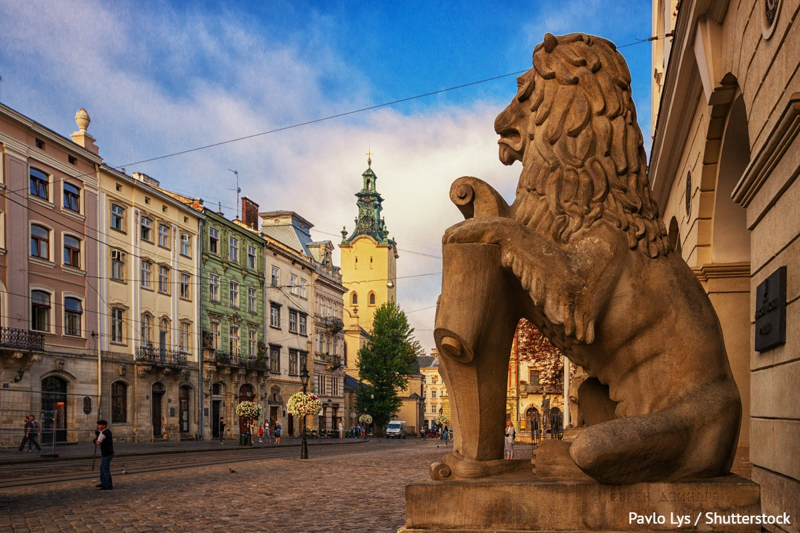

Дата народження: 15.07.2006;
Місце народження: м. Одеса
Освіта: Одеський ліцей №4, м. Одеса;
НТУУ "КПІ", м. Київ
Хоббі:
Улюблені книги:
Львів — це історичне місто на заході України, відоме своєю унікальною європейською архітектурою. Його центральна частина є об'єктом Світової спадщини ЮНЕСКО; Львів привертає увагу старовинними будинками, площею Ринок та вузькими вуличками з бруківкою. Це сучасне місто, яке чудово зберігає свій історичний колорит, має безліч цікавих музеїв і завжди залишає приємні враження після відвідування
